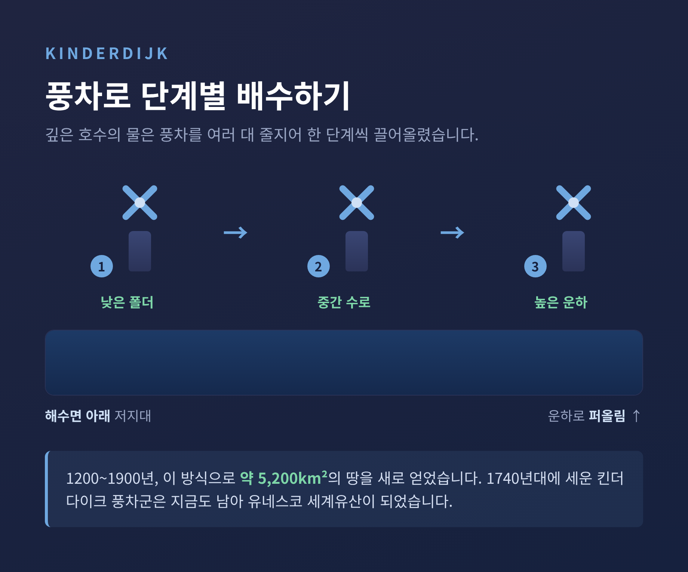
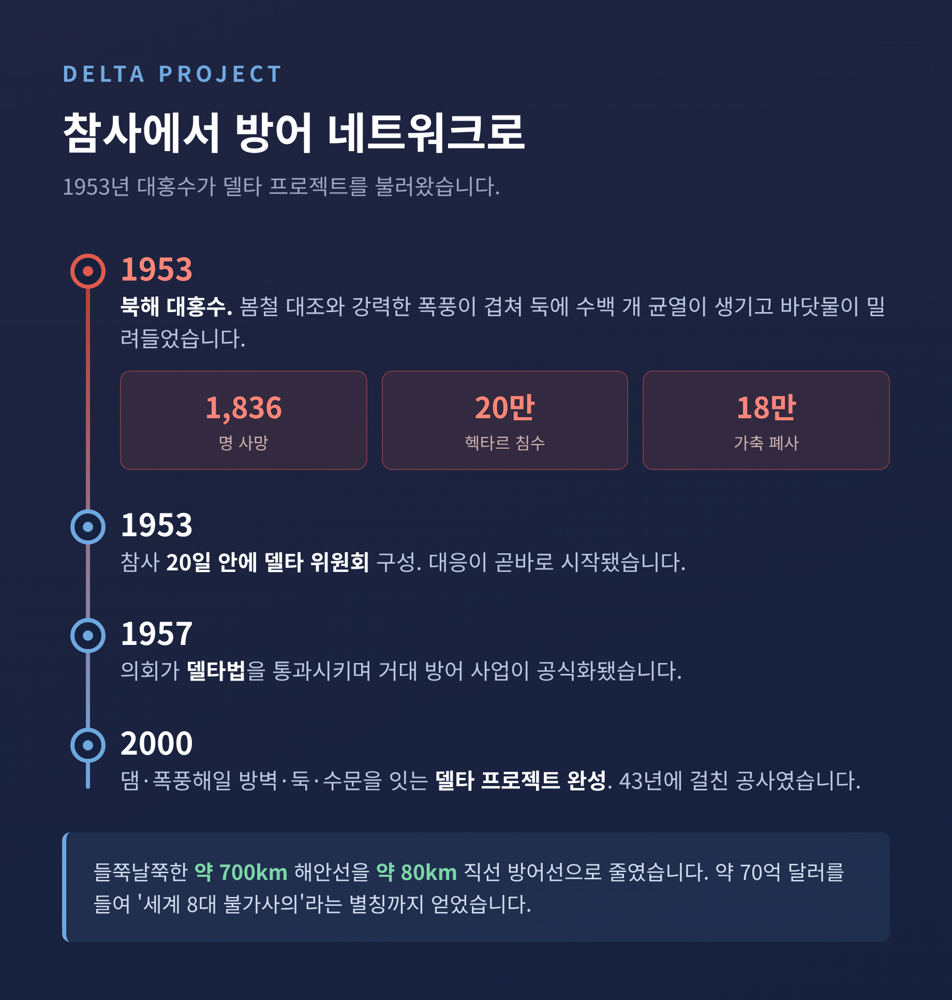

[세계] 네덜란드 물과의 싸움 — 바다를 메워 만든 나라의 천 년
이번 글에서는 네덜란드가 물과 벌여 온 천 년의 싸움을 정리해 보겠습니다.
국토의 4분의 1이 바다보다 낮은 나라가 어떻게 물 위에 땅을 세웠는지, 그 과정을 차례로 따라가 보려 합니다.
수치와 연도는 모두 확인된 자료에 근거했습니다.

■ 바다보다 낮은 땅에서 시작된 나라
네덜란드라는 이름은 본래 "낮은 땅"을 뜻합니다.
이름값을 그대로 합니다. 국토의 약 26%가 평균 해수면 아래에 놓여 있습니다.
강 범람까지 더하면 국토의 약 55%가 침수 위험 지역입니다.
둑과 펌프가 없다면 만조 때 국토의 약 65%가 물에 잠긴다는 추정도 있습니다.
가장 낮은 곳은 로테르담 인근으로 해수면보다 약 6.76m 아래에 있습니다.
라인강, 뮤즈강, 스헬더강이 만나는 삼각주 위에 나라 전체가 얹혀 있는 셈입니다.
그런데도 해수면 아래 그 26% 땅에 전체 인구의 약 21%가 살아갑니다.
물러설 수 없는 자리에서, 사람들은 물러서는 대신 싸우는 길을 택했습니다.
■ 터프에서 폴더로, 풍차가 일으킨 변화
둑이 보편화되기 전, 사람들은 인공 흙더미인 '터프(terp)' 위에 마을을 세워 홍수를 피했습니다.
물을 막을 수 없으니 일단 물 위로 올라선 것입니다.
변화는 풍차에서 왔습니다.
1400년대에 풍차가 배수에 도입되며 흐름이 바뀌었습니다.
본래 곡물을 빻던 풍차를 개조해 스쿠프 휠과 아르키메데스 나선을 돌렸습니다.
이 장치로 둑에 둘러싸인 저지대, 곧 '폴더(polder)'의 물을 운하로 퍼올렸습니다.
깊은 호수는 풍차를 여러 대 줄지어 단계적으로 빼냈습니다.
1740년대에 지어진 킨더다이크 풍차군은 지금도 남아 유네스코 세계유산이 되었습니다.
이런 방식으로 1200년부터 1900년 사이, 바다와 호수에서 약 128만 에이커(약 5,200km²)의 땅을 새로 얻었습니다.
오늘날 네덜란드에는 약 3,000개의 폴더가 있습니다.

■ 20세기의 대공사, 바다를 호수로 바꾸다
20세기에는 규모가 한 단계 커졌습니다.
북해의 얕은 만이던 자위더르해를 둑으로 막는 자위더르해 공사가 그 중심이었습니다.
핵심은 압슬라위트다이크였습니다.
1927년에 착공해 1932년에 완공된, 길이 약 32km의 거대한 둑입니다.
이 둑은 짠물 자위더르해를 담수호 아이설호로 바꿔 놓았습니다.
수위를 통제하게 되자, 바다였던 자리에 새 땅을 만드는 일이 가능해졌습니다.
그렇게 생긴 곳이 플레볼란트주입니다.
평균 해수면보다 약 5m 낮은 이 땅에 지금은 약 40만 명이 살고 있습니다.
"신은 세상을 만들었지만, 네덜란드인은 네덜란드를 만들었다."
바다에서 솟은 주 하나가 이 오랜 속담을 그대로 증명해 보입니다.
■ 1953년의 밤, 그리고 델타 프로젝트
1953년 1월 31일 밤부터 다음 날 아침까지, 봄철 대조와 강력한 북해 폭풍이 겹쳤습니다.
둑에는 크고 작은 균열이 수백 개 생겼고, 바닷물이 밀려들었습니다.
피해는 컸습니다. 약 20만 헥타르가 잠겼고, 네덜란드에서만 1,836명이 목숨을 잃었습니다.
가축 약 18만 마리가 폐사했고, 수천 채의 집이 부서졌습니다.
대응은 빨랐습니다. 참사 20일 안에 델타 위원회가 꾸려졌습니다.
1957년에는 의회가 델타법을 통과시켰습니다.
그렇게 시작된 것이 델타 프로젝트입니다.
댐과 폭풍해일 방벽, 둑과 수문을 잇는 거대한 방어 네트워크입니다.
약 700km에 이르던 들쭉날쭉한 해안선을 약 80km의 직선 방어선으로 줄였습니다.
약 70억 달러를 들여 43년에 걸쳐 완성했고, '세계 8대 불가사의'라는 별칭까지 얻었습니다.

■ 막되, 닫지는 않는다 — 생태를 고려한 방벽
델타 프로젝트의 핵심은 오스터스헬더케링, 곧 동스헬더 폭풍해일 방벽입니다.
1976년부터 1986년까지 지은 길이 약 9km의 구조물입니다.
처음 계획은 바다를 완전히 막는 댐이었습니다.
그러나 설계가 바뀌었습니다.
갯벌 생태계와 어업을 지키기 위해, 평소에는 조수를 통과시키고 폭풍 때만 닫는 개방형 방벽으로 다시 그렸습니다.
30~40m 높이의 기둥 65개와 폭 42m의 슬라이딩 게이트 62개가 그 일을 맡습니다.
로테르담 항구 앞에는 마슬란트케링이 있습니다.
1997년에 완성된 이 거대한 가동 방벽은 길이 210m짜리 게이트 두 짝으로 항구를 지킵니다.
방어만이 답은 아니라는 판단이, 콘크리트 구조물 안에 함께 담긴 셈입니다.
■ 둑이 길러낸 합의의 문화
물과의 싸움은 사회의 모습도 바꿔 놓았습니다.
둑은 한 사람의 힘으로 지킬 수 없습니다. 마을이 함께 지켜야 합니다.
그 필요에서 물 관리위원회가 생겼습니다.
1255년 라인란트 물위원회가 그 시초로 꼽히며, 네덜란드에서 가장 오래된 민주적 제도로 평가됩니다.
토지 지분에 따라 대표를 뽑고, 지출과 규칙은 이해당사자의 합의로 정했습니다.
강요보다 협상이 현실적이었기 때문입니다.
이 오랜 협력의 전통은 훗날 '폴더 모델'이라는 이름을 얻습니다.
모든 당사자가 동등하게 발언하는 합의의 방식입니다.
다만 균형 있게 보아야 할 대목도 있습니다.
'폴더 모델'이라는 용어 자체는 1990년대에 생겼고, 현대적 적용은 1982년 바세나르 협약에서 본격화됐습니다.
천 년의 물 협력이 현대 합의문화의 은유로 다시 읽힌 면이 큽니다.
■ 기후변화 앞에서, 다시 그리는 설계
싸움은 끝나지 않았습니다.
기후변화로 강 유량이 늘고 극단적 고수위가 잦아졌습니다.
예전에는 둑을 계속 높이는 것이 답이었습니다.
지금은 강에 더 넓은 자리를 내주는 쪽으로 무게가 옮겨가고 있습니다.
'강에 자리를 내주기(Room for the River)'가 그 정책입니다.
높은 수위를 안전하게 흘려보내면서 경관과 환경까지 함께 살리려는 설계입니다.
후속 프로그램인 'Room for the River 2.0'은 가뭄까지 함께 다룹니다.
필요한 변경에 대한 최종 결정이 2026년에 내려질 것으로 예상됩니다.
물론 완벽한 안전은 없습니다.
'너무 많은 물'과 '너무 적은 물'을 동시에 감당해야 하는 과제가 여전히 남아 있습니다.
정리하면 이렇습니다.
네덜란드의 천 년은 물을 이긴 기록이 아니라, 물과 함께 사는 법을 익혀 온 기록에 가깝습니다.
땅을 빼앗기지 않으려 둑을 쌓았고, 그 둑을 지키려 합의를 배웠습니다.
이제는 물을 밀어내는 대신 자리를 내주는 법까지 고민합니다.
"바다를 메워 만든 나라"라는 말 뒤에는, 멈추지 않는 손질의 시간이 놓여 있습니다.
물과의 싸움이 언젠가 끝나겠냐고 물으신다면, 아마 그 답은 '계속된다'일 것입니다.